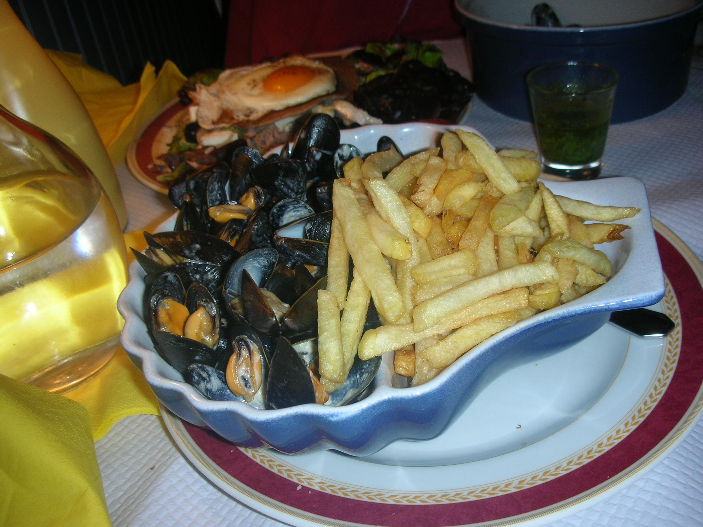
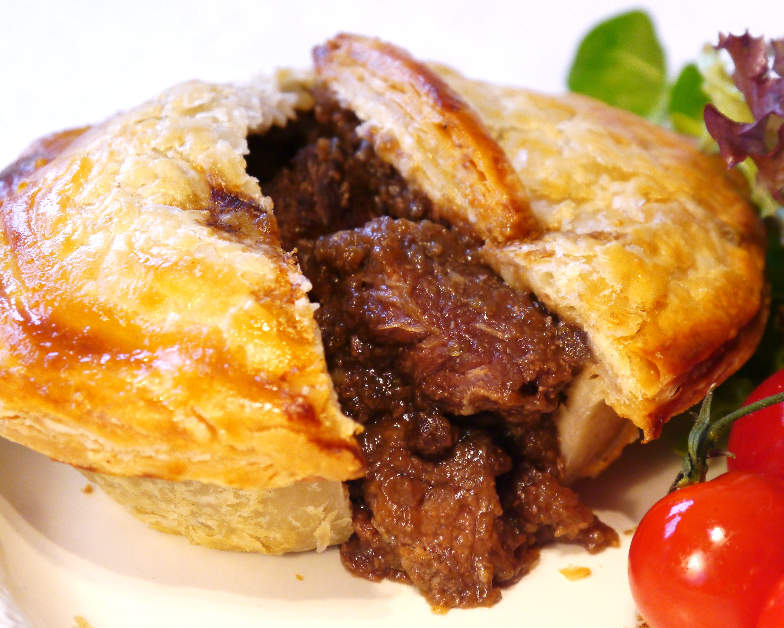
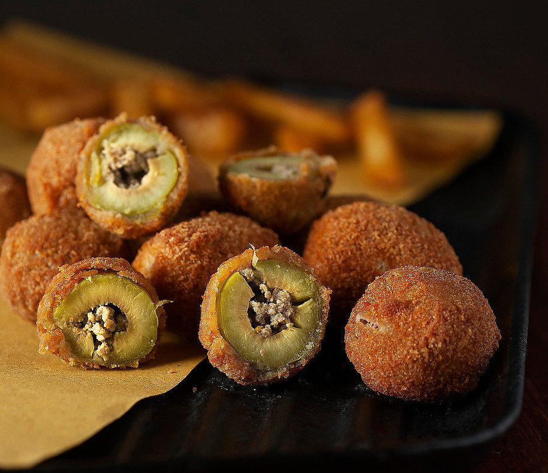

Austria: Apfelstrudel. - Apfelstrudel or Viennese apple strudel is a close cousin to classic
American apple pie. Tart apple is paired with sweet pastry dough for a delicious combination.
Austrians love eating it with their afternoon coffee.
Belgium: Moules Frites- Mussels and fries are as common in Belgium as burgers and fries are in
the U.S. Try it the simple way by ordering plain, steamed mussels or with some extra flavor like
curry powder.

Canada: Poutine - Gravy, fries and cheese curds — what's not to love about poutine? Although this
savory concoction is available in the U.S., you should try it while visiting Canada. Some
restaurants have more than 100 variations to choose from, so there is something for everyone.
England: Steak and Kidney Pie - steak and kidney pie can be made from lamb or pork kidneys.
Britons love the melt-in-your-mouth texture and savory flavor. A true delicacy especially if you’re
willing to pay for a homemade slice!
Finland: Leipäjuusto “Squeaky Cheese.” - It's unlikely you'll find Leipäjuusto or Finnish squeaky
cheese anywhere outside of Finland. The mild cheese is most commonly pan-fried and served with
cloudberry jam for dessert or alongside coffee.
Australia: Meat Pie - Australians sure do love their meat pies — they consume millions of pies
annually, taking it on the go or enjoying it at a cafe. Eat it like locals do by topping it with warm or
chilled tomato sauce.

Hungary: Goulash - Goulash literally translates to "Herdsman" in Hungarian because they
made the dish during cattle drives in harsh conditions. Although, the meaty stew didn't get
its rich red color until Turks invaded and introduced paprika to the country during the 16th
century. If you visit in September, check out the annual goulash festival held in Szolnok.
Italy: Deep-Fried Olives- A Unique treat you should make sure you get in your tummy when in
Italy are deep-fried olives. The dish originated in the southern region in a town called Ascoli-
Piceno and has since spread north. You can choose a variety, like prosciutto-stuffed to ground-
beef-stuffed, from street vendors or local restaurants.

Japan: Ramen- Ramen noodles don't come out of a styrofoam cup in Japan. Japanese ramen
consists of Chinese-style noodles served in a meat broth flavored with soy sauce or miso. Each
region of Japan has its own variation, and toppings range from boiled egg to corn.
Poland: Chlodnik- A summer staple, Polish chlodnik is a refreshing cold beet soup with a vibrant
pink color. It's flavored with cucumbers, radishes, plain yogurt and topped with hard-boiled eggs,
making it a truly healthy and delicious meal.
South Africa: Biltong -Biltong is made from a variety of spiced, dried and cured meat, including
beef and ostrich. It's usually eaten as a snack and tastes like a saltier version of beef jerky. Many
locals dice the meat strips and add them to stews or muffins. You can also find biltong-flavored
cheese spreads and potato chips in the country.